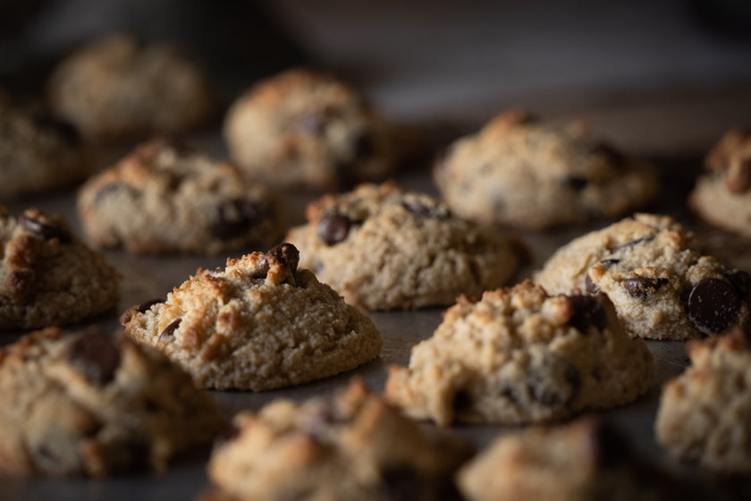

About Confectionarium
If you are passionate about baking sweet things, you are in luck: So are we! We are all about sharing that love, so built a place to make it happen. Just follow the sweet smells.
Creativity is Tasty
There are so many talented and brilliant bakers out there, and our mission is to share all that amazing work and knowledge in a place where bakers of all kinds can come to learn and teach.
It’s a tray of fresh-from-the-oven community.
Our Founder

Hank Fredlington
Hank always loved baking, but he didn’t know the best tools or techniques, so he created his own recipe: A cup of creativity, a dash of community spirit, and a liberal glaze of can-do attitude, and Confectionarium was born.
“It’s all about the open and sharing spirit that is so essential to the baking community.” -Hank Fredlington
Common Questions
What if I’m new to baking?
Welcome to the community! We have recipes and tutorials of all levels.
Can I share savory cooking information?
We love all kinds of food, but Confectionarium is for the sweet-tooth.
How can I get on the Featured Recipes list?
Our team hand-selects each recipe based on a wide variety of factors. Our best advice: Keep posting!